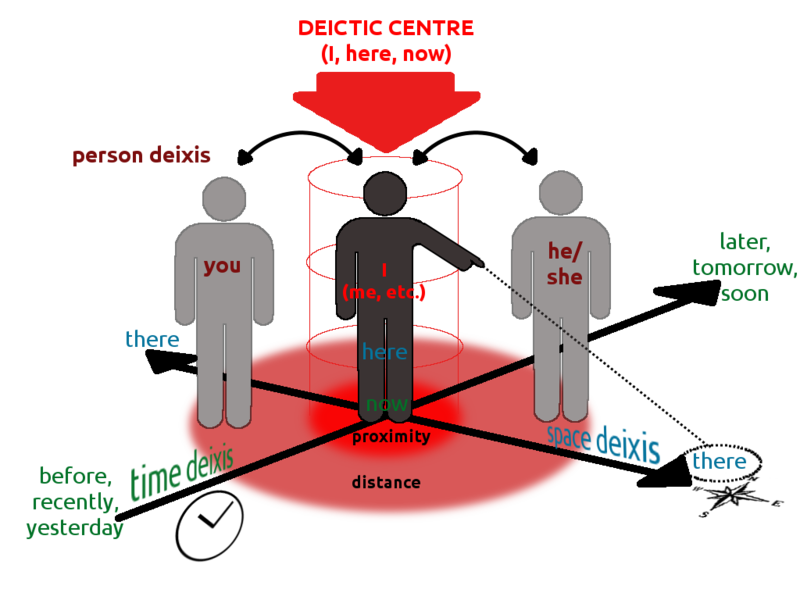

Originally Aired: April 13th, 1974
Written by: Bob Dorough
Performed by: Bod Dorough
Shel's Review
Music: 🎵
Animation: 📺📺
Pedagogy: 🎓🎓🎓
Accuracy: 🎯🎯🎯
Yikes Factor: 😬
I hate this song I hate this song I hate this song. Bob has decided to do something absolutely ridiculous and awful and sing a song where he speeds up and slows down his own voice to different speeds to make it sound "older" or "younger" and then overlaps all of them to "harmonize" in a "chorus" and it is so incredibly grating and awful to listen to I hate it so fucking much. What's more? It's not even a catchy song, it's annoying Alvin and the Chipmunks shit. Also, it's boring to look at, newspaper strip on a white background nonsense, and most of the actual adverbs are on screen and not in the song, and there's so so so much spoken exposition over the song which also gives inaccurate information!
Adverbs are a very controversial catch-all category in Linguistics. A lot of things get labeled adverbs which are very different, and it's very hard to pin down how an "adverbial phrase" works in the study of linguistic syntax. Furthermore, when we expand outside of English, we find it very difficult to pin-down adverbs in any consistent cross-linguistic manner. That said, while some scholars do consider the word "there" to be an adverb, since "He placed it over there" is describing the... act... of placing? The fact is that in terms of grammatical syntax "there" is a deixic noun. It is a noun which stands-in for another noun which is already known by context.

"Here" and "there" are locations you know by context. They always function, syntactically, the same as the noun they are replacing. In the same way that pronouns fit into the sentence the same places you'd place someone's name, "here" will always go in the same part of the sentence as "my apartment" or "Pennsylvania." "There" always goes in the same part of the sentence as "on the table" or "in China." A neat thing about deixis is that in addition to standing in for the core noun, it also can stand in for the preposition if that's known through context as well. I don't have to say "on top of there" if you can tell by where I'm pointing that it's "on top." That said, I may do so if I want to be specific. Grammatically, I cannot place deixic nouns in the same places I'd place adverbs. In English, adverbs have very interesting syntactic rules. "I gently bit my girlfriend" and "I bit my girlfriend gently" are both grammatical; but "I bit gently my girlfriend" is not grammatical. And yet, "I ran quickly to the store" is grammatical too. So you can place an adverb between a dative verb and the dative object of a verb; but you cannot place it between an accusative verb and the accusative object of a verb.
Here and there follow completely different rules. They follow the same rules as the noun. I cannot say "I there ran," I can only say "I ran there." I cannot say "I her bit." I can only say "I bit her." But I can say "I quickly ran" or "I ran quickly." It's a deixic noun, basically a pronoun for places. Of course, not all deixic words are nouns. "Yesterday" is, in fact, an adverb.... sometimes... linguists fucking hate adverbs, and I hate this song.
Only one yikes point because of Capitalism and my fuuucckiinnnggg eaarrrsss but like, hey, it's not even an all-white cast this time.
June's Review
Music 🎵🎵
I can't give this a 3/5 because if I do someone might notice I ranked this higher then Conjunction Junction and try to kill me in my own home. But I like this song :3 I always thought it was fun. The yelling guy at the end was funny to me. Yeah it's real fuckin' annoying, but like... half the songs on this show are annoying. I do think some of the voices are Bad though.
Animation 📺📺📺
I actually really like a ton of details about this. I love the black and white store with the colored details, I love the way it cuts in an out of being commercials, I love that all the words are like Grocery Store Products. Also, as a kid for some reason the fact that both of the adults do relatively normal commercials and then the kid goes "HI! SUPPOSE YOU'RE GOIN' NUT GATHERIN'!" was the funniest shit I could imagine. Why would you be nut gathering? Why is this the first thing you went to? I love it. It is pretty basic though, and I hated the big machine that adds endings to other words, why do they have legs.
Pedagogy 🎓🎓🎓
Wow! That's a lot of grammar stuff Shel wrote that's really smart! You should read it! This song mostly taught me that "indubitably" was a word which I then had to ask what it meant and was glad I knew. Three points!
Accuracy 🎯🎯🎯🎯/5
Yikes 0/5
NUT GATHERIN' 🌰/🌰
Up Next: Season 2 is over so it's time for our preliminary Grammar Rock! Round-Up! Lots of numbers. Then, uh oh, it's finally time for America Rock!